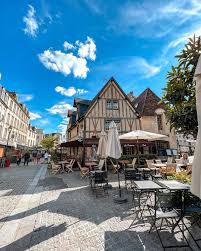

Rouen ➔ Caen
Mardi 21 avril 2026
| 🚆 ALLER : 08h15 | 🚆 RETOUR : 18h03 |
1. Approche Gare de Rouen
06h45
07h35
Départ Domicile
Trajet voiture vers Parking P+R Mont-Riboudet.
🚗 50 min
07h40
08h05
TEOR & Métro
T1/T2/T3 vers Théâtre des Arts, puis Métro vers Gare Rue Verte.
🚌 25 min
2. Voyage & Transit Mer

08h15
09h57
Train Nomad (Aller)
Trajet direct Rouen RD ➔ Caen.
🚆 1h42
10h19
11h00
Bus Ligne 12 (Aller)
Gare SNCF vers Général Leclerc (Ouistreham).
🚌 41 min
3. Pique-Nique Riva Bella

11h00
13h25
Plage de Ouistreham
Installation sur le sable et pique-nique.
🚶♂️ 16 min marche aller
13h41
14h35
Bus Ligne 12 (Retour)
Riva Centre vers Tour Leroy (Caen).
🚌 54 min
4. Château & Goûter
14h40
16h30
Château & Vaugueux

Visite du quartier (je ne sais pas ce qu'il y a comme boutiques) et visite sur les remparts du château.
16h35
17h20
La Brioche Chaude
Pause goûter pas-chère normalement mais je ne trouve pas de menue. (Rue Neuve St-Jean).
🚶♂️ 10 min marche
5. Fin de l'expédition
17h20
17h45
Marche vers la Gare
Descente finale vers le quai.
🚶♂️ 25 min (Marge sécu)
18h03
19h42
Train Nomad (Retour)
Départ Caen ➔ Arrivée Rouen RD.
🚆 1h39